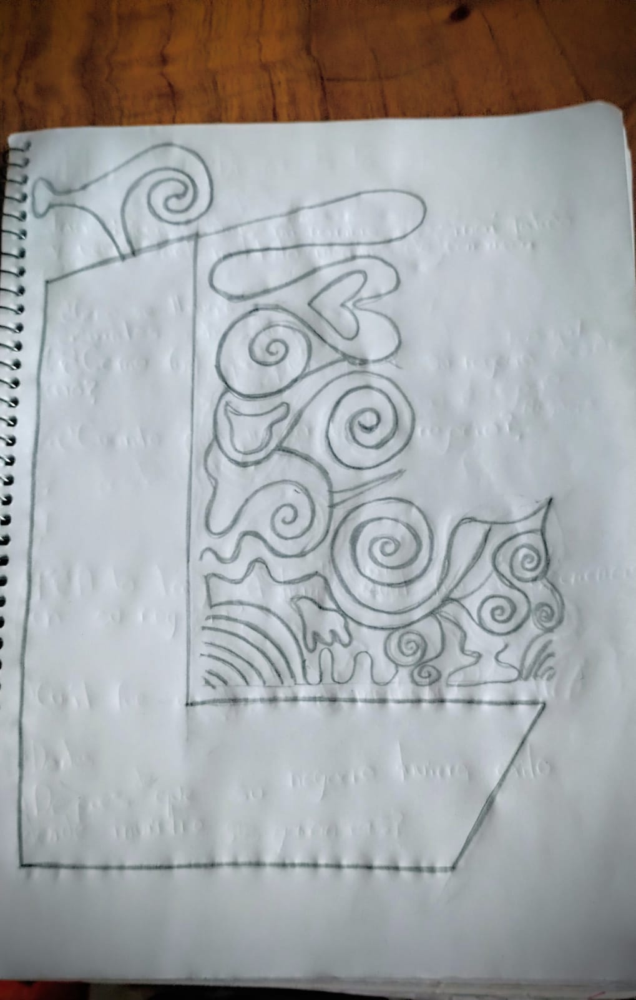
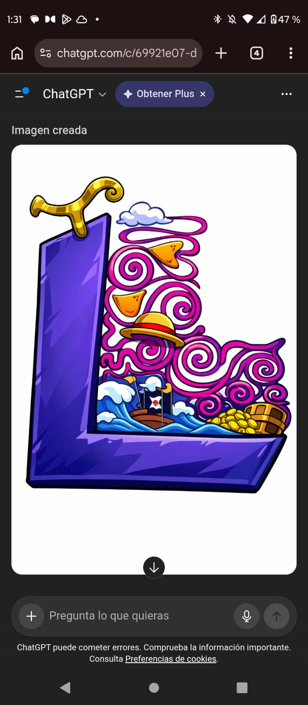
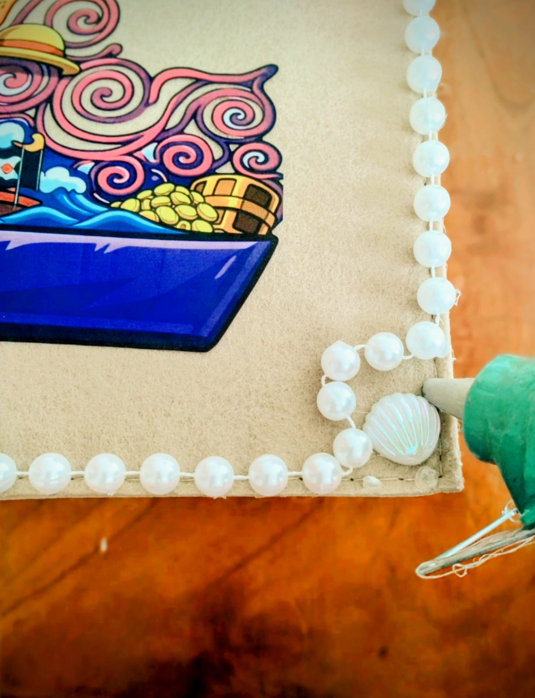
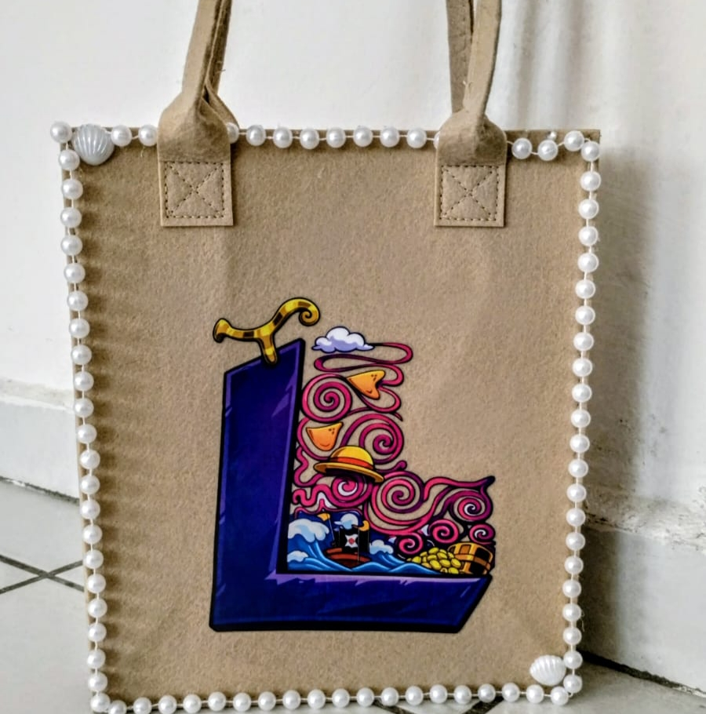
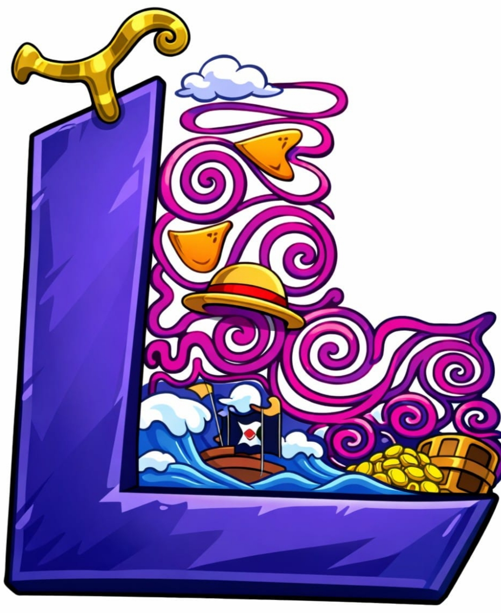
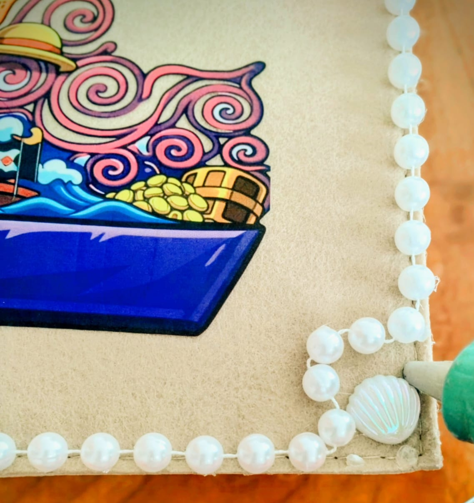
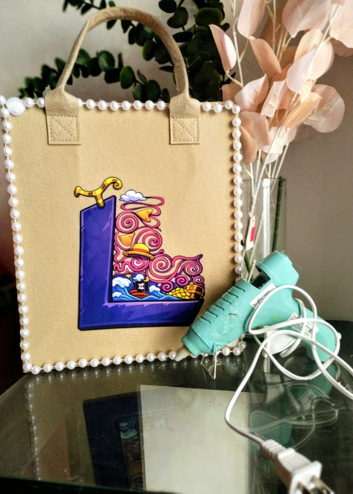

Empezamos con el diseño de la letra y elegi el tema de one piece

Uso de ChatGPT para hacerla más llamativa.



24 horas para el pegado del diseño textil.

Cuentas blancas para resaltar todo el contorno.

